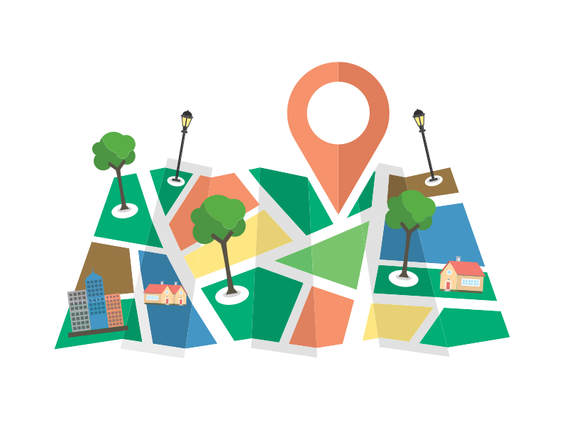

<!--
  Generated template for the AddSitePage page.

  See http://ionicframework.com/docs/components/#navigation for more info on
  Ionic pages and navigation.
-->
<ion-header>

  <ion-navbar>
    <ion-title>Add Site</ion-title>
  </ion-navbar>

</ion-header>


<ion-content padding>
  <div class="main_div">
    
    <ion-list>
        <ion-item-divider>Host your own charging location</ion-item-divider>
        <!---->

        <ion-item>
          <ion-label>Address</ion-label>
            <ion-input type="text" name="name" [(ngModel)]="address"></ion-input>
        </ion-item>
    
        <ion-item>
          <ion-label >Latitude</ion-label>
          <ion-input type="text" [(ngModel)]="latitude" ></ion-input>
        </ion-item>
    
    
    
        <ion-item>
          <ion-label>Longitude</ion-label>
          <ion-input type="email" [(ngModel)]="longitude"></ion-input>
        </ion-item>
    
      </ion-list>
    <button ion-button icon-start large color="primary" full (click)="addsite()">
      <ion-icon name="locate"></ion-icon>Add Site</button>
  </div>

</ion-content>

<ion-footer>

  </ion-footer>
